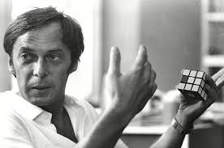

How to solve Rubik's cube:


(Born on July 13, 1944), Erno Rubik is a Hungarian inventor, architect, and professor of architecture. He is famous for making mechanical puzzles. Rubik is also involved with many other organizations such as Beyond the Rubik's Cube, "Rubik's Cube Beginner" and the Judith Polgar Foundation in their quest to teach students problem-solving skills And introducing them to the field of mathematics from an early age.

Erno Rubik was born in Budapest-Hungary on July 13, 1944. His father, Erno Rubik Sr
, was an aeronautical engineer at the Esztergom Aircraft Factory, and he had a high reputation thanks to his experience in this field.
erno Rubik admitted in many interviews that the credit is due to his father when he arrived Now Erno Rubik says about him:
“I learned by his side how to create a positive meaning and purpose for work. Hands if required. For him, every job was worth it.”
Rubik studied sculpture at the Secondary Institute of Fine and Applied Arts, then joined the Budapest University of Technology and became a member of the Faculty of Architecture, and then Rubik was a member of the Hungarian Academy of Applied Arts in the Faculty of Interior Architecture and Design. Rubik also added that what he learned at the university had a decisive role in deciding the course of his life, as he said: "The education I received gave me the opportunity to acquire subjects and skills that require a lot of practice, diligence, determination and guidance from professors."


Rubik was a professor of architecture at the Budapest Polytechnic Institute who was working on designs for 3D puzzles to finish the initial design of the cube in 1974, and receive a patent in 1975. Rubik contracted with the American company Ideal Toy in 1979, which changed the name of the product from "magic cube" to "Rubik's Cube", to reach the world-famous puzzle in 1980, the cube gained more popularity, and the producing company won many awards. So far, it has sold more than 350 million copies, making it the best-selling game in history. In addition to the cube, Rubik's had many other innovations: Rubik's Board, Rubik's Snake, Interlocking Rubik, Rubik's 360.

Rubik considers himself obsessed with books, saying: “Books gave me the opportunity to learn about the world, about man and nature,” and he also stated his special interest in science fiction literature.
One of his hobbies is hiking in nature.
Playing sports
skiing
Table Tennis
Kayaking at Lake Balaton
He has won several awards, including:
1996-Anios Jedlik Award from the Hungarian Patent Office.
1997-Hungarian Reputation Award.
2007- Kosath Prize (Hungary's most valuable cultural award).
2008-Moholi Nagy University Award for Art and Design.
2009- Rubik appointed as the European Union Ambassador for Creativity and Innovation.
2010- American Award for Science and Engineering Festival (for his contributions to the dissemination of science).
2010- Hungarian Order of Merit (cross and star).
2010-Prima Primisma Award.
2014-St Stephen's Cross (Hungary's highest medal of merit).
2014-Honorary Citizenship of Budapest.